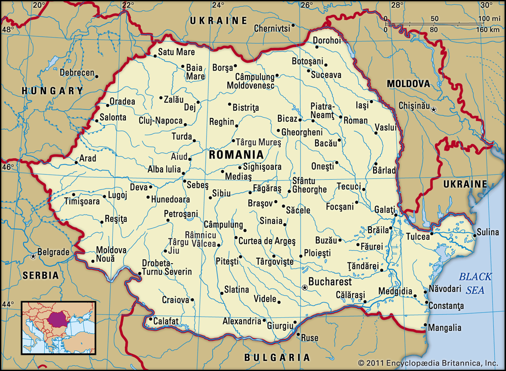

A short story
 România is a country located at the crossroads of Central, Eastern, and Southeastern Europe. It borders Bulgaria to the south, Ukraine to the north, Hungary to the west, Serbia to the southwest, Moldova to the east, and the Black Sea to the southeast. It has a predominantly temperate-continental climate, and an area of 238,397 km2 (92,046 sq mi), with a population of around 19 million. Romania is the twelfth-largest country in Europe and the sixth-most populous member state of the European Union. Its capital and largest city is Bucharest, and other major urban areas include Iași, Cluj-Napoca, Timișoara, Constanța, Craiova, Brașov, and Galați. The Danube, Europe's second-longest river, rises in Germany's Black Forest and flows in a southeasterly direction for 2,857 km (1,775 mi), before emptying into Romania's Danube Delta. The Carpathian Mountains, which cross Romania from the north to the southwest, include Moldoveanu Peak, at an altitude of 2,544 m (8,346 ft). Romania was formed in 1859 through a personal union of the Danubian Principalities of Moldavia and Wallachia. The new state, officially named Romania since 1866, gained independence from the Ottoman Empire in 1877 During World War I, after declaring its neutrality in 1914, Romania fought together with the Allied Powers from 1916. In the aftermath of the war, Bukovina, Bessarabia, Transylvania, and parts of Banat, Crișana, and Maramureș became part of the Kingdom of Romania. In June–August 1940, as a consequence of the Molotov–Ribbentrop Pact and Second Vienna Award, Romania was compelled to cede Bessarabia and Northern Bukovina to the Soviet Union and Northern Transylvania to Hungary.In November 1940, Romania signed the Tripartite Pact and, consequently, in June 1941 entered World War II on the Axis side, fighting against the Soviet Union until August 1944, when it joined the Allies and recovered Northern Transylvania. Following the war and occupation by the Red Army, Romania became a socialist republic and a member of the Warsaw Pact. After the 1989 Revolution, Romania began a transition towards democracy and a market economy. Romania is a developing country with a high-income economy, ranking 49th in the Human Development Index. It has the world's 47th largest economy by nominal GDP. Romania experienced rapid economic growth in the early 2000s; its economy is now based predominantly on services. It is a producer and net exporter of machines and electric energy through companies like Automobile Dacia and OMV Petrom. Romania has been a member of the United Nations since 1955, NATO since 2004 and the European Union (EU) since 2007. The majority of Romania's population are ethnic Romanian and religiously identify themselves as Eastern Orthodox Christians, speaking Romanian, a Romance language. The Romanian Orthodox Church is the largest and traditional church of the country.